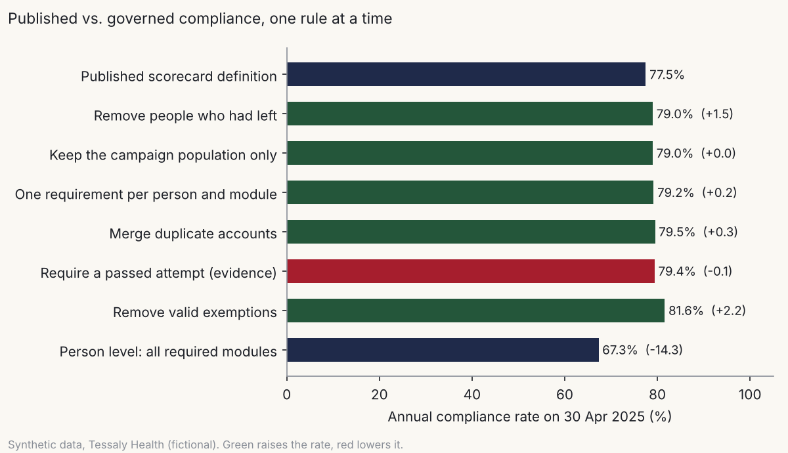
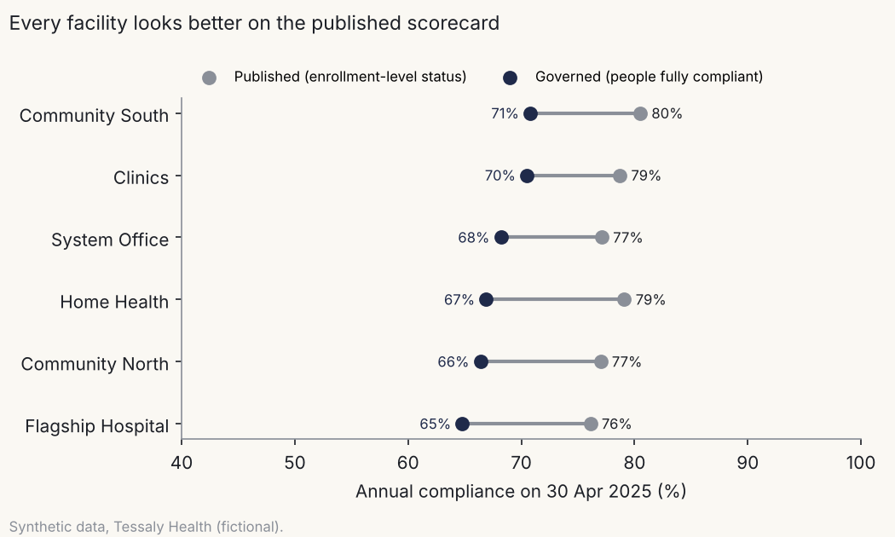

What does “complete” mean?
Case study A · Defining and auditing training compliance metrics
Tessaly Health is a fictional nonprofit health system. Every number on this page comes from synthetic data and shows a method, not a real result.
1. The question
Tessaly Health’s executive scorecard reported 77.5% of annual compliance training complete in April 2025. Leaders read that as “about three in four staff are compliant.” I wanted to know whether the number meant that, and if not, what the right number was and why the two differed.
2. The data
All data comes from the Tessaly Health synthetic data generator (LIB-23, in generator/, seed 20261108). It simulates three years (2023–2025) of a 4,000-person workforce and its learning records.
| Table | Rows used here |
|---|---|
| Employees (employment spells) | 6,387 |
| LMS accounts | 6,910 |
| Enrollments | 93,846 |
| Attempts | 91,782 |
| Exemptions | 404 |
| Published scorecard values | 208 |
The generator plants realistic defects (duplicate accounts, duplicate rows, statuses with no evidence, old-version completions, a reloaded campaign, mislabeled priorities) and records them in an answer key that I opened only after the analysis was done.
Limits. Learning-record behavior (how fast people complete, how often they fail) has no public benchmark, so it rests on my own stated assumptions. Workforce turnover and vacancy are tuned to national hospital surveys. There are no real people, units or courses here.
3. Approach
I took three steps.
- Ran a data-quality checklist (15 checks) before computing anything. Identity checks came first, because a duplicate account turns one compliant person into two half-compliant ones.
- Wrote the metric down before calculating it: population, unit, evidence, versions, exemptions and an edge-case table. That’s Training compliance metric definitions (LIB-01) (LIB-01).
- Built a bridge from the published number to the governed one, changing one rule at a time, so each piece of the gap has a size and a reason.
Alternatives I considered. I could have simply recomputed “the right number” and replaced the old one. That gives leaders a new figure with no explanation for why it moved, and no way to know which rule matters. A bridge costs one more step and answers both. For duplicate accounts, I considered fuzzy name matching. I used exact name plus employment dates plus a check that the two accounts’ records fill each other’s gaps, and stopped there. A wrong match is harder to defend than an unresolved one.
4. Validation
| Check | Result |
|---|---|
| Step 0 of the bridge reproduces the published April 2025 scorecard exactly | 16,106 / 20,780 on both. Pass |
| The governed 2025 result, rebuilt in SQL from the raw files, matches the Python result by facility | 2,469 / 3,666 on both. Pass |
| Manual accounts the matching rules linked to a person, checked against the answer key | 66 of 66 correct. 33 left for an administrator |
| Each data-quality check against its planted defect | 9 of 9 exact matches |
| Five people traced end to end, by hand | outputs/trace_sample.md |
The SQL rebuild shares only the identity map with the Python code. Population, evidence, exemptions and facility attribution are computed again from scratch.
5. Findings (synthetic data)

The published number was wrong in both directions. Cleaning the data raised the rate: the scorecard counted people who had left, duplicate rows and leave exemptions as gaps. Together they cost it about four points (77.5% to 81.6% of requirements met). But the scorecard counted enrollment rows, not people. Once the question becomes “is this person fully compliant?”, the answer is 67.3%: about two in three staff, not three in four.
“Completed” isn’t “compliant.” By year end, 76.3% of people had finished everything, nine points above the share who did it by the due date. A report that doesn’t state its as-of date can show either number.
The 2024 dip was an artifact. The scorecard showed 74.7% in 2024, against about 77.5% in the other two years. The governed rate was flat all three years (68.7%, 68.3%, 67.3% of people). The dip came from a reloaded campaign at one hospital that created 436 duplicate enrollments nobody could complete.
| Cycle | Published | Requirements met (M2) | People compliant (M1) | People complete by year end (M3) |
|---|---|---|---|---|
| 2023 | 77.4% | 81.6% | 68.7% | 78.7% |
| 2024 | 74.7% | 81.2% | 68.3% | 77.3% |
| 2025 | 77.5% | 81.6% | 67.3% | 76.3% |

The ranking changes too. Every facility drops 8 to 12 points. Home Health goes from second-best on the scorecard to fourth. A facility leader comparing themselves with peers would draw the wrong conclusion from the published view.
Some records belong to nobody yet. 33 manual accounts hold 47 completions that can’t be linked to one person without an administrator. None of them changes the 2025 due-date number, but they will in a cycle where they do.
6. What I’d do in practice
- Adopt the definition sheet formally. The compliance office owns it; learning operations stewards the data. Publish M1 as the headline and keep M2 for operations.
- Run the checklist before every publication, with the high-severity checks as a gate. The scorecard doesn’t ship until they’re clear or explained.
- Fix the sources, not just the report. Stop manual account creation for staff (rosters should use existing accounts), add a uniqueness rule to campaign loads, and correct the mislabeled priority at the clinics.
- Show the change, once. For one cycle, publish 67.3% beside the old 77.5% with a one-line explanation. A 10-point drop with no explanation looks like a failure; with one, it looks like the organization finally measuring what it meant. The steps are in Resolving a disputed KPI (LIB-50) (LIB-50).
- Retire the duplicates. The legacy compliance scorecard and the second “by job role” report stop running.
- Next: build the role-to-certification requirements matrix so certification currency (M6) can be measured the same way.
7. Files
| File | What it is |
|---|---|
| Training compliance metric definitions (LIB-01) | LIB-01 metric definition sheet |
| LMS data-quality checklist (LIB-04) and check script (LIB-27) | LIB-04 checklist and results; LIB-27 script description |
| Resolving a disputed KPI (LIB-50) | LIB-50 process for resolving a disputed KPI |
analysis/common.py |
Data loading and identity rules |
analysis/dq_checks.py |
The 15 data-quality checks (LIB-27) |
analysis/compliance.py |
Bridge, yearly and facility results, charts (LIB-24) |
analysis/validate_a.py |
Read-back, SQL rebuild, answer-key comparison, trace |
outputs/ |
Results tables, charts, validation report, traced sample |
../../generator/ |
LIB-23 synthetic data generator and its README |
To reproduce:
cd generator && python generate.py
cd ../case-studies/a-what-complete-means/analysis
python dq_checks.py && python compliance.py && python validate_a.py
All code is AI-assisted (Claude). I designed the definitions, checks, bridge and validation; Claude wrote the code to that design; the validation above is how I checked it.